Um monumento da Mata Atlântica entre rochas, trilhas e biodiversidade
Bem-vindo
Localizado na Região Serrana do Rio de Janeiro e abrangendo Teresópolis, Petrópolis,
Magé e Guapimirim, o Parque Nacional da Serra dos Órgãos (PARNASO) é uma das mais
importantes unidades de conservação do país. Criado para proteger paisagens únicas,
montanhas monumentais e um grande contínuo de Mata Atlântica, o parque reúne
biodiversidade exuberante, rios cristalinos e trilhas que fazem história.
Com cerca de 20 mil hectares protegidos, o PARNASO abriga formações rochosas
imponentes — incluindo o famoso Dedo de Deus, símbolo nacional do montanhismo —,
além de encostas íngremes, florestas densas e campos de altitude. É um destino ideal
para aventureiros, montanhistas, fotógrafos, pesquisadores e amantes da natureza.
Muito mais que um ponto turístico, o parque desempenha papel essencial na proteção de
ecossistemas frágeis e das nascentes que abastecem cidades vizinhas. Visitar o PARNASO
é vivenciar a conexão entre história, ciência, conservação e aventura.
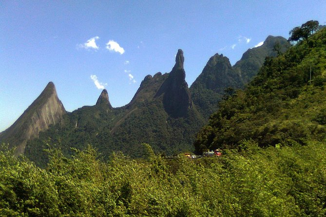
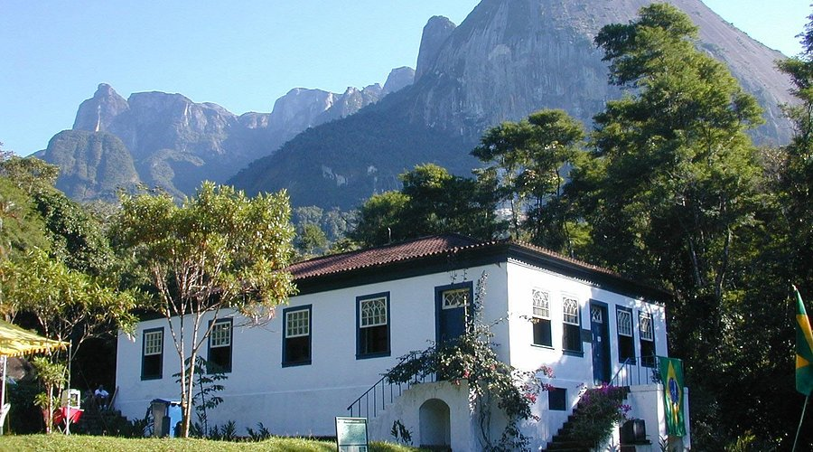
História
O Parque Nacional da Serra dos Órgãos foi criado em 30 de novembro de 1939 pelo
decreto nº 1.822, tornando-se um dos primeiros parques nacionais do Brasil. Seu objetivo
inicial era proteger a paisagem singular formada pelas montanhas da Serra do Mar e a
biodiversidade associada.
O nome “Serra dos Órgãos” surgiu dos primeiros portugueses que, ao avistar os picos,
compararam as montanhas aos tubos de um órgão de igreja. Desde então, essas
formações icônicas se tornaram referência para montanhistas e naturalistas.
A história do parque está diretamente ligada à evolução do montanhismo nacional,
principalmente após a primeira ascensão do Dedo de Deus em 1912, marco histórico da
escalada brasileira.
Em 2022, uma lei redefiniu os limites do parque, incluindo novas áreas de floresta e
ajustando trechos ocupados há décadas. Hoje, o PARNASO é referência em conservação,
pesquisa, turismo sustentável e educação ambiental.
Trilhas
O PARNASO possui a maior rede de trilhas do Brasil, com mais de 200 km de caminhos
oficiais que variam de percursos leves a travessias de alta montanha. É um dos melhores
destinos do país para caminhadas, contemplação e montanhismo.
Travessia Petrópolis–Teresópolis:
Considerada uma das mais belas do Brasil, possui cerca de 30 km e é realizada em 2 a 3 dias,
passando por campos de altitude, cumes e visuais épicos como Castelo do Açu e Pedra do Sino.
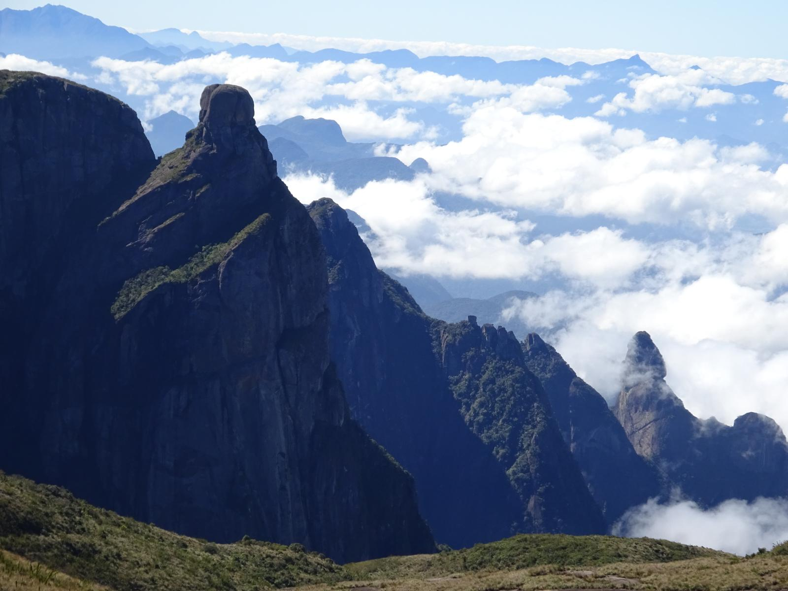
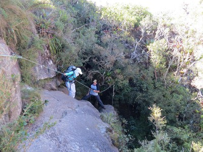
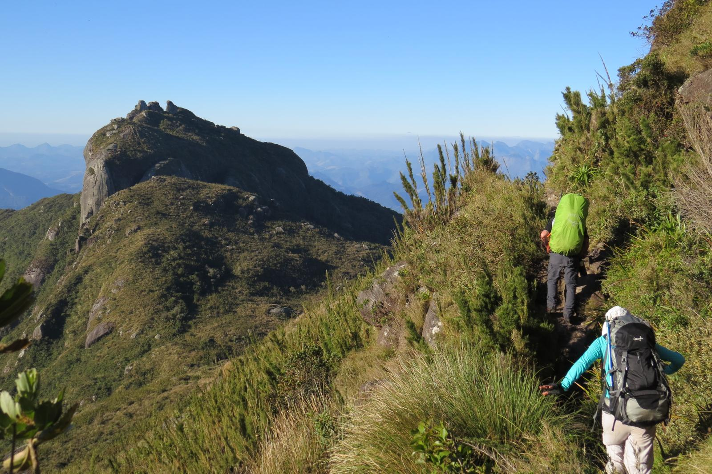
Trilha do Dedo de Deus:
O grande símbolo do montanhismo nacional. A trilha leva ao mirante da base da montanha, e
a escalada ao topo é considerada uma das mais icônicas do país. Requer guia e experiência.
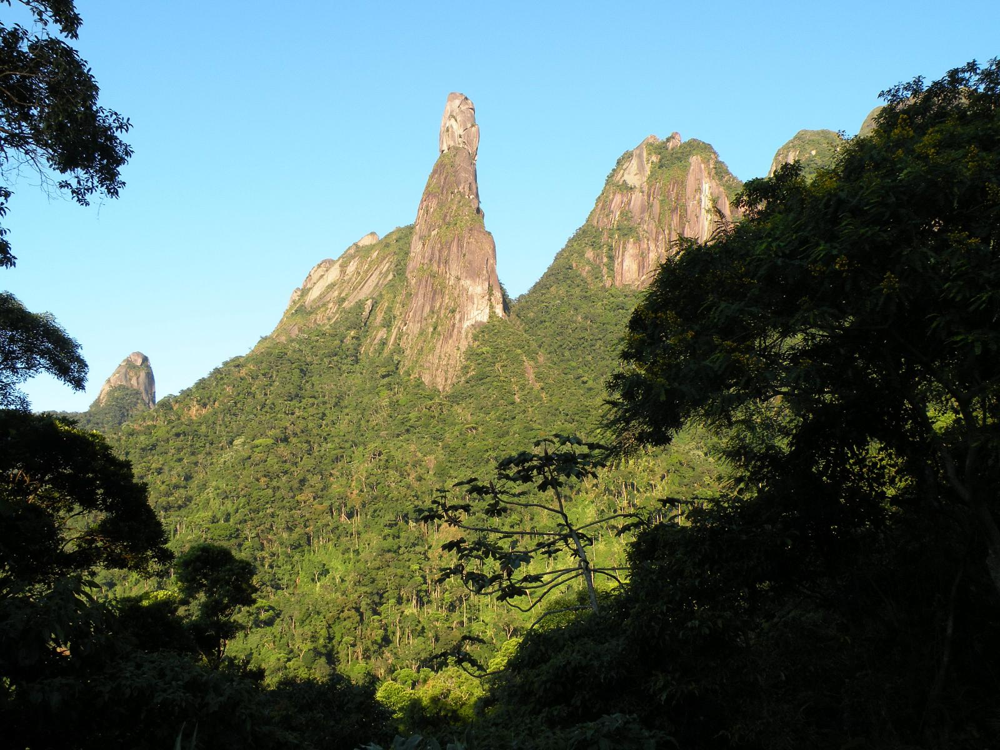
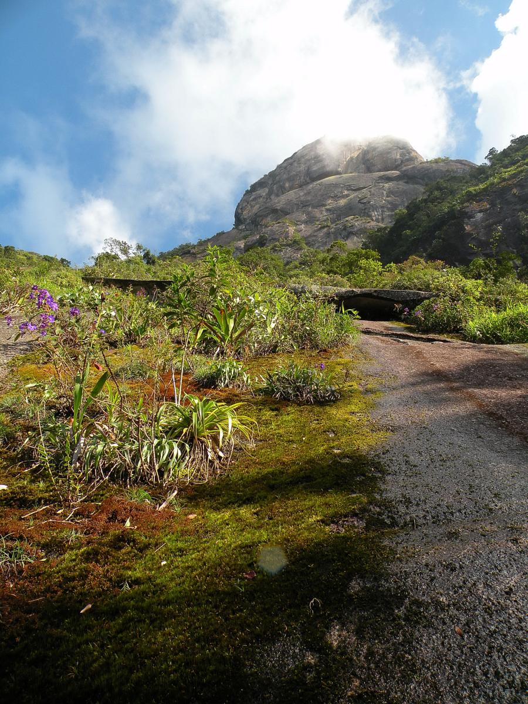
Pedra do Sino:
Com 2.263 metros, é o ponto mais alto da Serra dos Órgãos. A trilha sai de Teresópolis,
possui cerca de 11 km e oferece vistas que alcançam a Baía de Guanabara em dias claros.
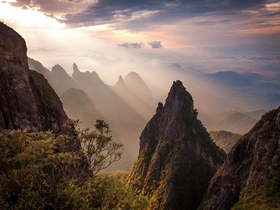
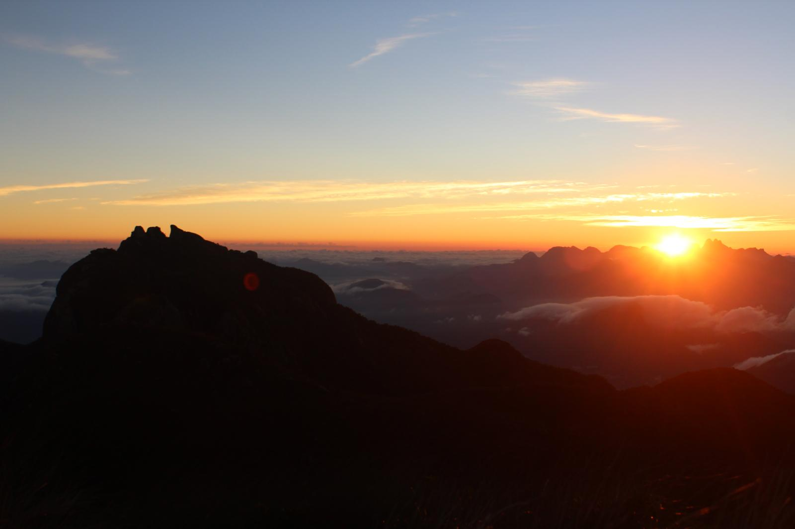
Biodiversidade
O PARNASO está inserido em um dos maiores remanescentes de Mata Atlântica do país,
com mais de 2.800 espécies de plantas registradas, entre elas centenas de orquídeas,
bromélias e espécies endêmicas. A vegetação varia conforme a altitude, indo de florestas
úmidas até campos de altitude acima de 2.000 metros.
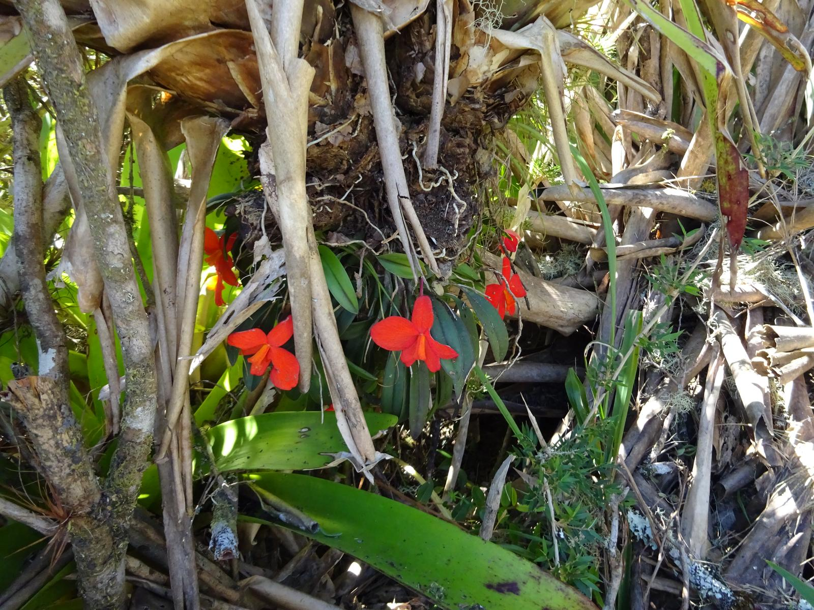
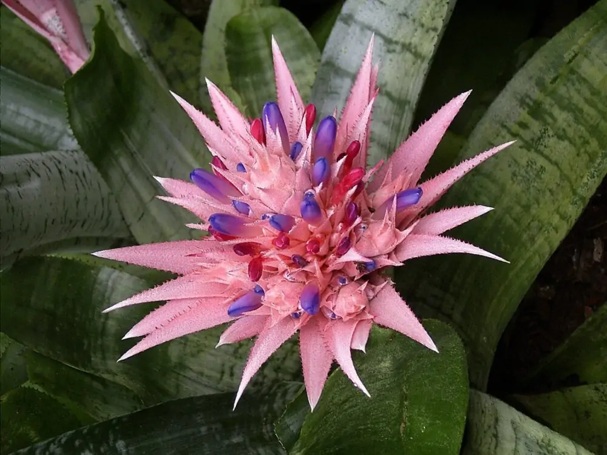
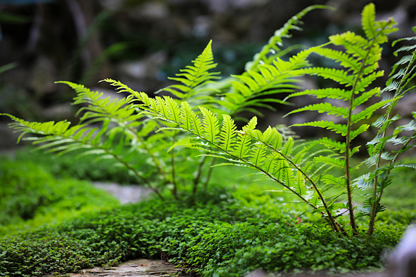
A fauna é igualmente rica: incluem-se espécies marcantes como o muriqui-do-sul,
gavião-pega-macaco, onça-pintada (registros de 2008), serpentes raras e diversas aves
endêmicas. O parque é essencial para a conservação desses ecossistemas e para a
proteção das nascentes que abastecem municípios vizinhos.
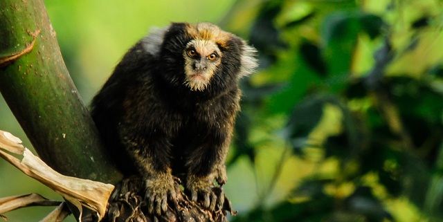
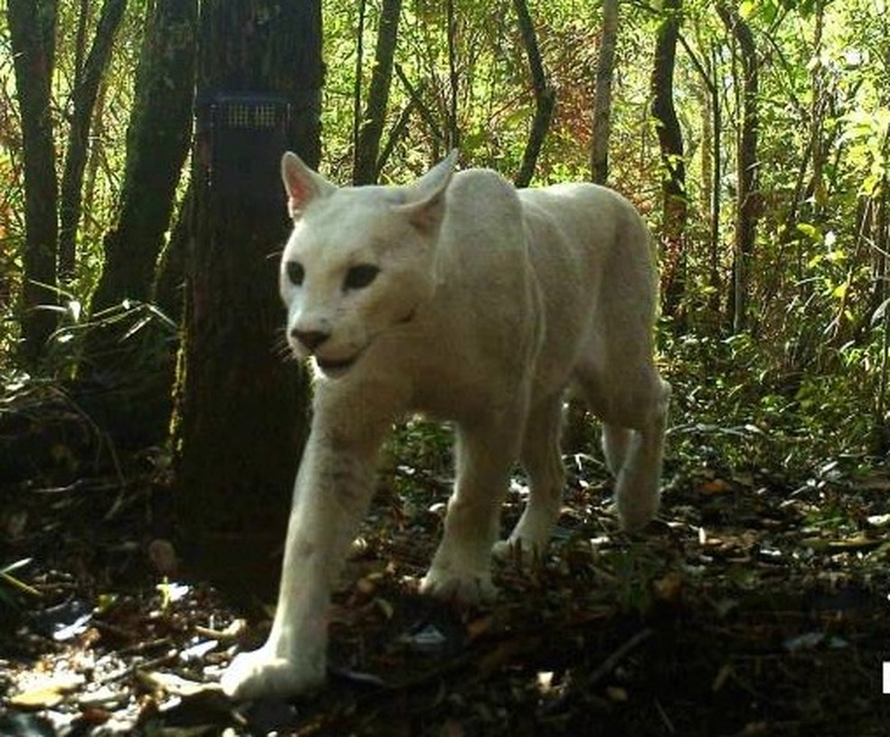
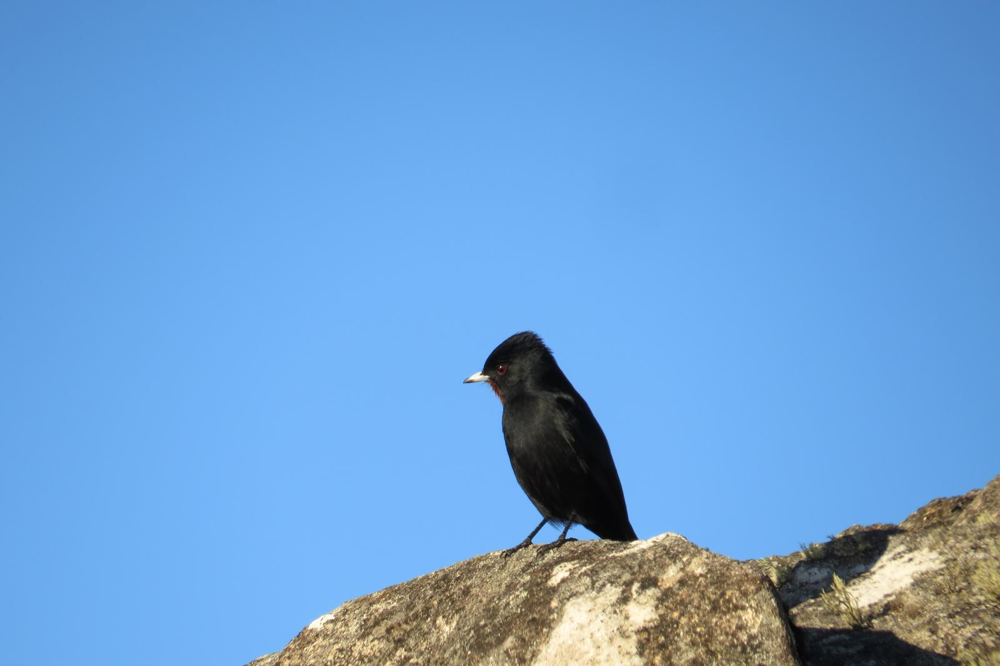
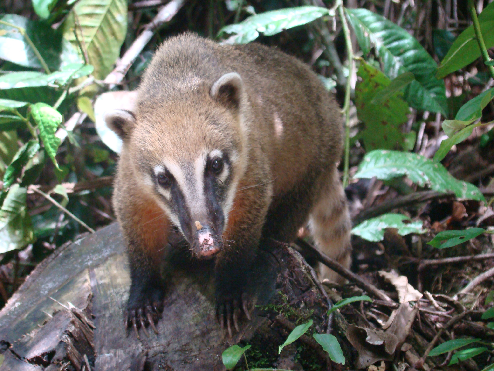
O PARNASO é uma das principais fontes hídricas da Serra do Mar, abrigando rios como o
Paquequer, Soberbo e Frades, além de cachoeiras famosas como Véu da Noiva e
Andorinhas — verdadeiros cartões-postais naturais.
Eventos e Horários
O parque recebe eventos educativos, de montanhismo, observação de aves e ações de conservação.
Horário de Funcionamento: terça a domingo, das 8h às 17h.
Algumas trilhas exigem agendamento ou guia credenciado.
Caminhadas guiadas: atividades educativas e visitas interpretativas.
Eventos de montanhismo: escalada, travessias e oficinas de segurança.
Mutirões ambientais: ações de limpeza, trilhas interpretativas e conservação.
Observação de aves: atividade guiada por biólogos especialistas.
Planeje sua Visita
O PARNASO oferece sede com infraestrutura, trilhas bem demarcadas, áreas de camping,
abrigos de montanha e mirantes. Recomenda-se verificar regras, condições do tempo e
possíveis restrições antes da visita. Equipamento adequado é essencial em trilhas longas.